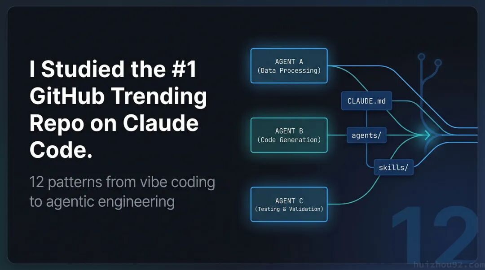
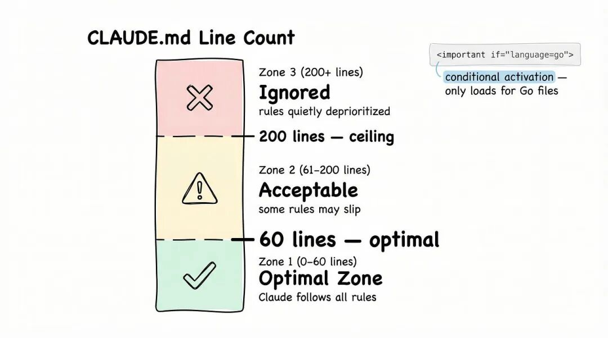
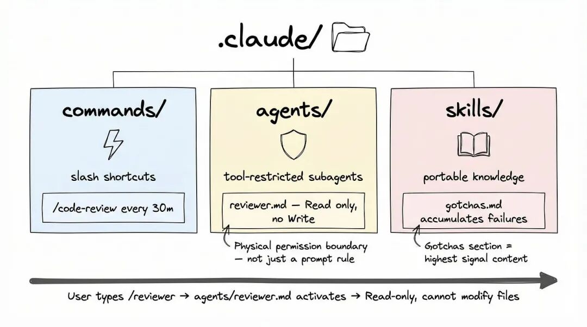
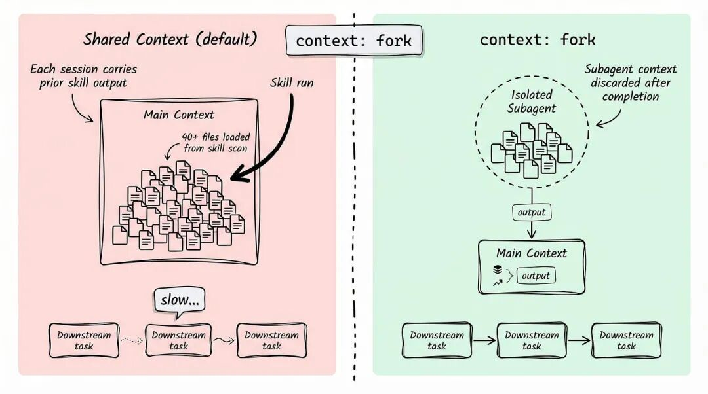
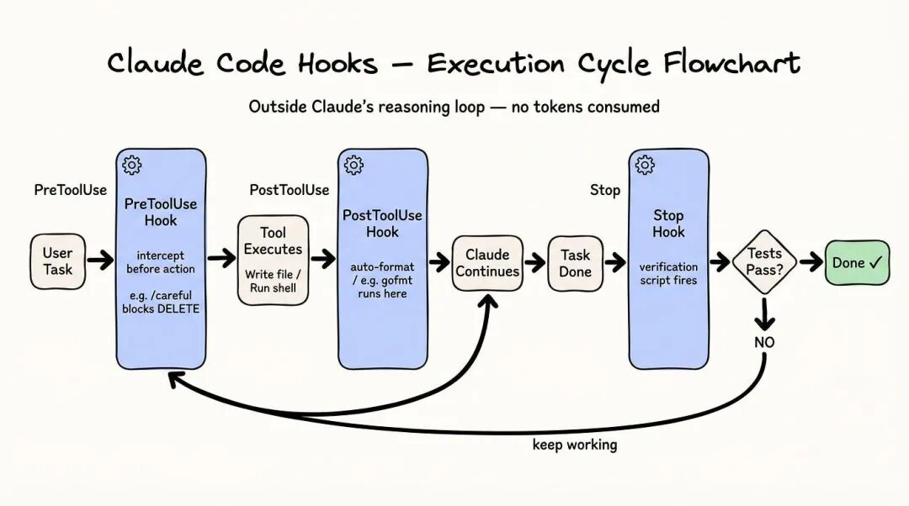
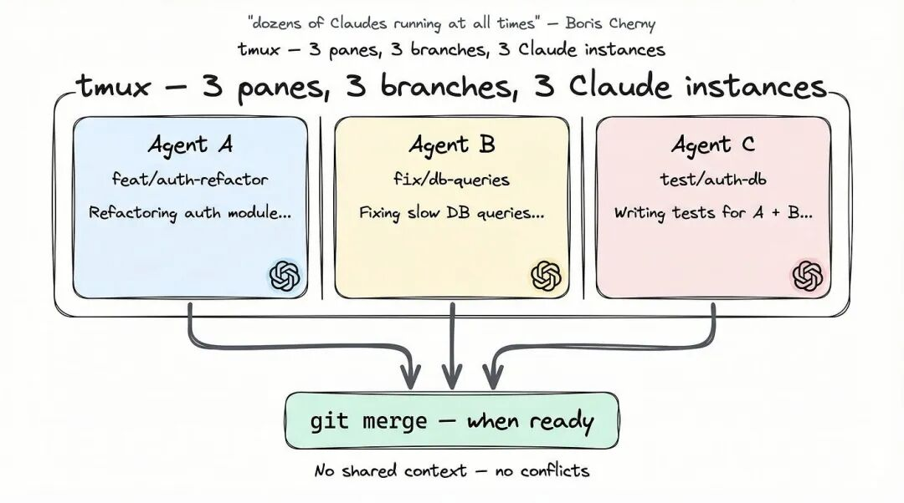

上个月，我第三次看着 Claude 帮我删错分支，这次没再甩锅给模型。
问题其实出在我自己——每次开新会话都从零开始，没有结构、没有约束、更没有可复用的配置。一句提示词丢过去，逐个点授权，得到一个半成品，再开下一个；出了问题就往提示词里加一句话。
"只读别改。" "/cmd 下的文件别碰。" "别忘了我们用的 Go 1.22。"
我当时在凭感觉（vibe code）写代码，只是自己还没意识到。
直到 GitHub 上冲上 Trending 第一的 claude-code-best-practice仓库冒出来，副标题就一句话：from vibe coding to agentic engineering。里面收了 69 条实战经验，分了 11 个类，还有 Claude Code 主程 Boris Cherny 的亲自补充。
我把它从头读到尾，筛出真正改变我工作流的 12 个模式。
CLAUDE CODE
1. CLAUDE.md 越写越长，反而越没用
很多人把 CLAUDE.md 当配置项：越详尽越好。我那个文件一度写到 500 行——代码风格、commit 格式、测试要求、命名规范、包组织规则一锅端。
Claude 经常忽略文件后半段。不是每次都这样，只是频率高到我没法再信它。
让人意外的研究结论是：60 行是甜区，200 行是天花板。过了这条线，文件下方的规则会被悄悄降权。Claude 的"工作注意力"是有限的，500 行的文件等于逼它同时背着几十条规则——谁也顾不上谁。
解决思路不是删规则，是让规则只在该出现的时候出现。
一个典型的多层级 Go 服务，CLAUDE.md 长这样：
my-service/
├── CLAUDE.md # 根目录：通用规则，约 30 行
├── api/
│ └── CLAUDE.md # REST 规范、错误码
├── internal/
│ └── CLAUDE.md # 包命名、接口风格
└── cmd/
└── CLAUDE.md # 启动参数、logger 初始化internal/CLAUDE.md里用条件规则：
<important if="language=go">
- 禁止裸 goroutine，统一用 errgroup 或 WaitGroup 管控生命周期
- 带缓冲的 channel 必须就近注释说明容量来源
- context 必须作为第一个参数，名字一律 ctx
</important>总行数保持在可控范围，每条规则只在真正相关时才被激活。

2. 别再把 Claude Code 当聊天窗口
我以前有个改不掉的习惯：每次开新任务，都得把规则在提示词里重新念一遍。
"帮我看这个 PR，只读别改，盯紧 internal/ 包，遵循项目里的错误处理规范。"
每一次、每一条、每一个会话都得重复。
正确的打开方式，是把 Claude Code 当成编排系统来用，而不是聊天界面。.claude/目录天然支持三种配置：
`commands/`：可复用的工作流快捷指令（slash command） `agents/`：专项子代理，工具权限写死 `skills/`：跨项目复用的知识模块
拿代码审查举例子。我在 .claude/agents/下放了一个 reviewer.md——一个只挂了 Read权限的专属子代理。没写工具、没开 shell、没接网络。
这个代理从物理上改不了任何文件。哪怕我在对话里口吐莲花让它"顺便把这里改了"，它也办不到。约束不是靠提示词硬撑，是配置层面就焊死了。
"只读别改"这句话，已经从所有提示词里删干净——没必要了。

3. context 是资源，别当空气
skills 默认会污染主 Agent 的上下文。这事儿的影响比想象的大。
我之前有个做代码质量分析的 skill，要读 40 个文件才能出报告。跑完之后那一场会话里所有后续任务都变重——Claude 脑子里一直背着那 40 个文件的内容，就算被问一个完全无关的问题也得带着跑。响应变慢，回答也钝了，钝得你很难直接归因到哪。
改一行 frontmatter 就好：
context: forkskill 跑在一个隔离子代理里。跑完，那段 context 直接扔掉。主 Agent 只看到最终的输出——一段干净的总结、一组发现列表，或者 skill 设计要返回的东西。
不用手动 /compact，不用开新会话清场。

4. 钩子跑在 Agent 主循环之外
PreToolUse、PostToolUse、Stop——三个钩子点，大部分 Claude Code 用户一辈子都没配过。
它们的设计巧妙在于：执行发生在 Claude 主推理循环之外。不吃 token、不打断任务，属于旁路自动化——挂在 Claude 动作旁边，而不是 Claude 动作的一部分。
几个实打实的用法：
写入即格式化：给 PostToolUse挂一个 gofmt，每次写完 Go 文件自动跑一遍。格式化再也不用专门叫 Claude 去干——它就那么发生了。
危险操作加护栏：/careful模式激活一个 PreToolUse钩子，拦下所有不可逆动作——删文件、覆盖、强制推分支——必须显式确认才放行。高风险重构前打开它，任务结束自动关。
完成度校验：第 11 条再展开。

5. 权限弹窗少了 84%
Claude Code 默认对每条 shell 命令都要弹授权。这个默认对安全是好事，对心流是灾难。
/sandbox把 shell 命令丢进隔离环境跑。每条命令的破坏半径被圈住，授权门槛自然就可以降下来。实操下来：权限弹窗少了 84%。
代价是有的——沙箱里能用的系统能力有限。但绝大多数编码任务根本碰不到沙箱边界，烦人的中断就此消失。
6. "同一时刻挂着几十个 Claude"
这是 Claude Code 主程 Boris Cherny 描述自己工作流时用的原话。没夸张。
claude -w直接把 Claude 拉到一个 git worktree 里——一个独立分支下的隔离工作目录。再配上 tmux 的多窗格，就能同时挂一排互不干扰的 Claude 实例，各自有自己的 context、各自有自己的分支、各自跑自己的活。
A 在重构 auth 模块，B 在修 database 层，C 在给 A、B 写测试。三方不共享 context，互不冲突。改动各自落在不同分支，准备好再合并。
从"等一个 Claude 回答完再问下一个"，到"十几个一起跑"——这个转变，大概是 vibe coding 和 agentic engineering 之间最显眼的一道分水岭。

7. ultrathink 不是噱头
在任务描述里随便哪个位置敲下 ultrathink，Claude 就进入高强度推理模式。这是 extended thinking 的自然语言触发器——不用改配置、不用换模型，只是一个词。
不是啥任务都适合。绝大多数任务用不上。
我之前做服务拆分的方案设计：普通模式给了三个像样的选项；切到 ultrathink 之后，Claude 提了两个我没想到的硬约束——跨服务的事务边界、现有监控体系接入的迁移成本。最终选定的方案和普通模式的推荐完全不同。
8. CI 干不了的本地自动化
/loop 30m /code-review每 30 分钟跑一次代码审查工作流。无人值守。间隔最长 1 小时，单次循环最久 3 天。
CI/CD 自动化的是代码合并之后会发生什么。/loop自动化的是开发进行中会发生什么——而且它能办 CI 根本上办不到的事，因为它能看到你当下正在干啥。
CI 流水线看的是 diff。loop 形态的审查看得见你这轮会话里一直在改什么、中间问过哪些问题、自己立过哪些规矩。有一回周五下午我让一个 loop 跑到周一早上，周一一回来，它已经把问题标好、PR 摘要写了个七七八八。
大多数人不知道 Claude Code 原生带这个能力。它就有。
9. 中途问问题，不再打断任务
跑一个 90 分钟的大重构。中间想顺嘴问个不相干的事——一个别的文件、一个别的关注点。打断意味着 context 丢一半；但这问题不答又卡得慌。
/btw把问题塞进队列。Claude 接着当前任务，看见你的问题，在一个自然的停顿点答掉，再回到原来的活上。
用上一次之后，再为问个旁枝问题停下来重开任务，简直是浪费生命。
10. 让 skill 值得写的关键章节
如果你打算给团队攒 skill，仓库 skills 部分的核心贡献者 Thariq 有句话：
"Skill 里信号密度最高的内容，永远是 Gotchas 这一节。"
不是 overview，不是示例用法，是 Gotchas。
Gotchas 段记的是 Claude 在真实使用中真撞上的失败模式。不是你猜会出问题的边界 case——是真真切切撞过、记下来的事故。它们的信息密度比解释性的散文高得多，因为具体、可验证、会复利：每多记一条失败，未来就少踩一次坑。
先建 Gotchas 章节。每撞一次坑就更新。把它当成 skill 文档的主菜。
11. 让"做完了"等于真的做完了
Claude 会告诉你"做完了"。这话不代表真的做完了。
有次让它写一组 API handler。它说 done。我翻代码一看——三个 handler 里有两个错误处理是空的，err != nil后面啥也没有。要是我当时给 Stop 钩子挂了测试覆盖率检查，立刻就把它逮回去重写了。
Stop钩子在 Claude 表示任务完成时触发。把它接上一个校验脚本——跑测试套件、核对预期文件是否在、调用 API 端点验返回——验证不过就把任务状态回滚，让 Claude 接着干，直到通过为止。
在那些夜里跑、通宵跑、跨多会话跑的自动化里，这是"输出能直接用"和"还得人工再过一遍"之间唯一的分界。
12. SDK 调用提速 10 倍，就一个开关
用 Agent SDK 调 Claude（不是交互式 CLI）的时候，加 --bare。
context discovery 是 Claude 启动期的例行动作：找 CLAUDE.md 文件、加载配置、探测环境。交互式会话里只跑一次；批处理自动化里每次调用都跑。
--bare跳过这步。启动时间最高能砍到原来的 1/10。
单次调用差别不大。我们有个日级代码分析流水线——大概 300 个文件，每个文件一个 Agent 并行跑。加 --bare之前：40 分钟。开了之后：18 分钟。基础设施、负载都没换。
这 12 条背后的同一件事
把 69 条 tip 通读一遍之后，vibe coding 和 agentic engineering 之间的真正差距，不是工具不同，是同一套工具被用得不一样。
Vibe coding 是反应式的：你说要啥，Claude 试试，不对就改，再来。输出质量几乎全押在你今天这条提示词上。
Agentic engineering 把这套苦活外包给配置。约束活在文件里，不在提示词里。工作流按计划跑。Agent 的权限硬编码，对话里怎么说都越不了界。context 干净的状态自动维持。系统的一致性，是提示词永远撑不出来的。
能办成这事的工具——agents、skills、hooks、worktree、loop——全在 Claude Code 原生出货清单里。它们不是什么高级特性，绝大多数人压根没找过它们。
把这 12 个模式练顺手，你和 Claude Code 的关系就从"问答机"升级成"协作队友"了。